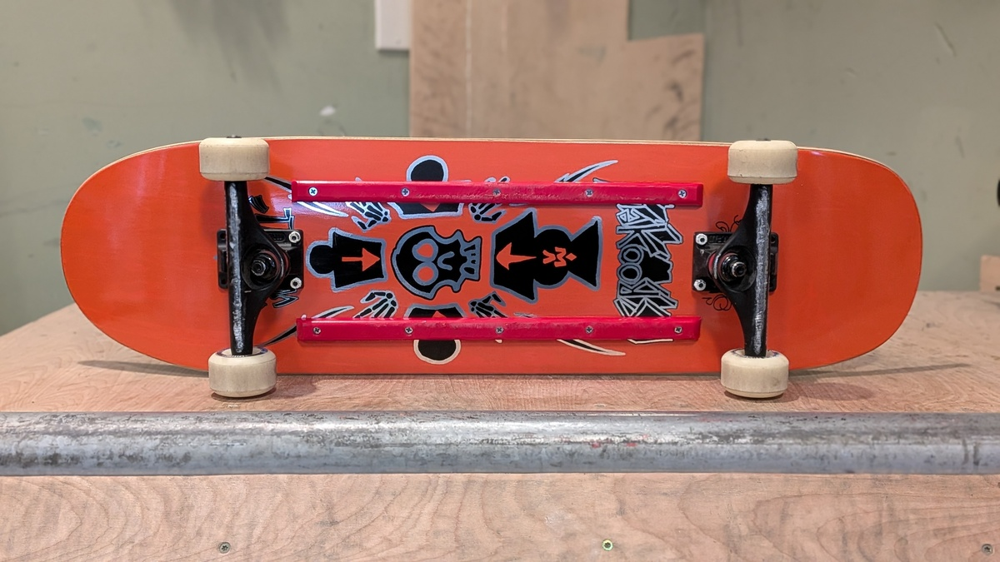
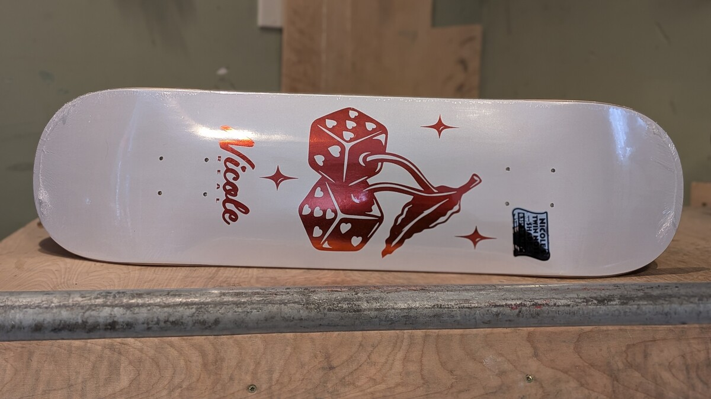
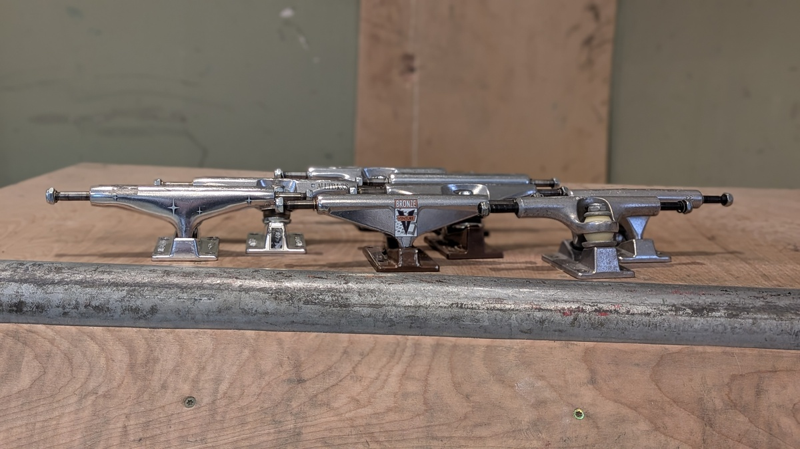
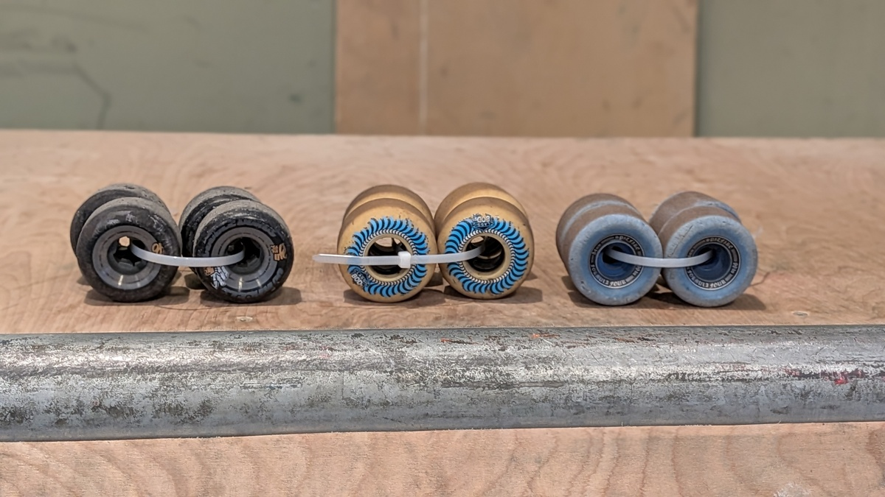
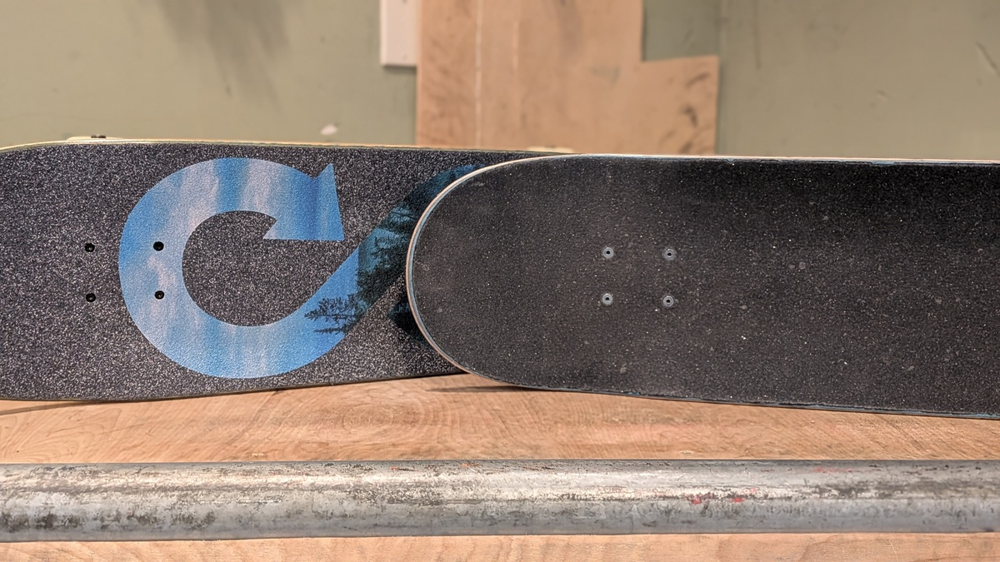

You want to buy a skateboard because you realized skateboarding is tons of fun. But buying a skateboard can be scary and confusing to the uninitiated. Here's a guide to help with your decisions. Spoiler alert: there's no single right answer, but there are some wrong answers.
First, ask yourself what you plan to do on the skateboard. If you change your mind later, that's fine. As you skate more, your interests may change. I'm writing this guide assuming you want to go to the skatepark, learn ollies and kickflips, or skate bowls or miniramps. That's what I have the most experience with.
Your first big choice is whether you want to buy a complete, fully-assembled skateboard, or buy the individual parts. Buying the individual parts, you can assemble the board yourself (which is simple), or if you buy from a skateshop, the shop clerk can assemble it for you.
I'd avoid almost anything you can get at big-box stores. The cheap skateboards you can get for $25 or less are usually meant for small children. Their trucks are low quality, the decks are flimsy, the griptape is poor, and the wheels are weird.
Also, I would avoid the tiny Penny boards in their classic shape (whether from Penny itself or their imitators). They're fun I'm sure, but they're not meant to be easy to ride. Ollies, turning, and even balancing on the small board will be difficult for beginners.
I would get a popsicle-shape deck. You can do just about anything you want on a skateboard with this kind of shape. You can do ollies, you can ride in bowls, and if you put on soft wheels they're great for cruising.
If money is tight, the cheapest decent option is something like an Element complete. I've seen them at Sierra for $50. They come with a real deck, real wheels, and real trucks. None of the three are probably the highest quality. Also your options are limited in terms of deck width, graphics, and wheels. But they're better than the cheap crap from a big-box store.
Next up is a complete from a real skateshop. Usually but not always they come with name-brand parts. You will know that all the components fit together. Again, you will have fewer options for deck width, graphics, trucks, and wheels.
This is the most exciting option and the most flexible. You can choose all of the components that you want. You can tailor the board to suit your needs. Or if you like a certain brand, you can buy their products.
Of course, if you're new, you may not know what you want. You haven't developed any preferences for the kind of skateboard you like. And you may not even know what kind of skateboarding you like to do. You may buy a board that's ideal for street skating, but you find you like skating miniramps and bowls.
No matter what kind of skateboard you get, there are a few rules to follow to ensure you have a functional skateboard.
There are some things I would avoid if you're a beginner. I've been skating for a few years now, and I still avoid them.
One of the advantages of going to a skateshop is that they can tell you if some of your components are incompatible. If you have questions, you can get answers. They can tell you what products they think are quality and what ones are not. And they can teach you how to setup a new board.
There's no single right answer for your setup. I would stick to cheaper components initially. As your tastes develop, you may decide you want a wider deck, smaller wheels, different trucks, etc. You can refine your skateboard over time.
Generally you would use a narrower deck for street skating, and a wider deck for bowl or vert skating. If you're a bigger person or have big feet, you might want a wider deck regardless. Since you don't know for sure what you like, I would choose a more middle-of-the-road option. Something between 8 and 8.5 inches, or even narrower if you're small (like a child).
I started with an 8-inch deck. Out of curiosity, I tried larger ones. An 8.5-inch deck felt good. A 9-inch deck felt unwieldy. Right now I'm skating 8.38-inch decks.
Of course, there are things to consider: shape, wheelbase, length, concave, nose/tail size and angle, etc. As you skate more, you'll learn what you like. I still don't know for sure what I like other than width.
The major truck brands are all suitable. Some trucks turn more easily, but as a beginner you may prefer more stable trucks while you're learning to balance. Some trucks are taller, which lets them accommodate larger wheels.
Most importantly, I would match your truck width to your deck width. You could go up or down a size and be fine. As I said earlier, I would avoid hollow or inverted trucks if you're new to the sport. They will save only a few grams, which you likely wouldn't notice early on.
If you're not sure, I would get trucks that are less turny. While you're still learning to balance, it can feel like you can't keep the board level. More stable trucks from Venture or Thunder may be helpful.
Independent and Ace trucks are known to be more turny. When I rode Independent trucks I would put harder bushings in them so they turned less easily. You can do that, but I think buying trucks that you can ride off the shelf is more sensible. Now that I've been skating for a few years, I prefer a more turny truck. Recently I got a pair of Ace trucks, which are known for being "carvy."
Slappy Trucks is a new brand, but I don't know much about them. I have their low trucks, which didn't turn enough for me. But I was told their taller trucks are too turny. Krux trucks are known for having fun graphics, but I have no experience with them Also, there are budget options like Mini Logo.
The biggest options are width and hardness. Width is measured in millimeters (mm). Hardness is measured using a Shore durometer scale, but they typically use the A scale, which is silly. You can know just that smaller numbers are softer, and higher numbers are harder.
If you want a cruiser deck for riding around, get big, soft wheels. (Remember, if the wheels are too big, you will need riser pads and longer hardware.) Otherwise, if you're unsure I would get 99-hardness wheels, around 50 to 56 mm tall. With lower trucks I would stick to the smaller end of that range.
Harder wheels are good, because they slide better. Some slide is good for many tricks. 101-hardness wheels may be good on concrete, but too hard for Skatelite (indoor ramps). 97-hardness wheels may be better for Skatelite and give you a slightly smoother ride at the cost of less slide.
However, not all wheels of the same hardness ride the same. My 101 OJ wheels are incredibly slippery, but my 101 Satori wheels are perfect for Skatelite.
The first bearings I got were Bones Reds. They lasted for over a year. I've also had Bones Swiss, and I can't really tell the difference between the two.
Bearings can wear down: most notably they can rust and the cages can break. I would get cheaper bearings, especially if you're new. You can save your money for a replacement pair. You can worry less when your board rolls into some dirt. If you want to, you can try more expensive bearings later on when you know you'll get your money's worth.
You can choose any of the major brands and be fine. I would pick a brand and stick with it—it will be one less thing to get used to when you get a new deck.
Mob, Jessup, and Pepper are all great. I like Jessup because it's made in the USA.
I rode non-abrasive DKL grip for a while. It works like normal grip, but doesn't scrape up your shoes. However, putting it on can be tricky. A little water can make it slippery until it dries. Furthermore, there's a chance it will wear down before your deck is 100% done.
Also I tried No Rip grip. If I recall correctly, it was easier to put on a deck, but I don't remember much about it.
I stopped using the non-abrasive grip because I realized my shoes wear out even if they didn't have holes in them. If you're doing ollies, then you'll be jumping repeatedly on your shoes. This breaks them down. Your shoes may last longer, but they won't last forever.